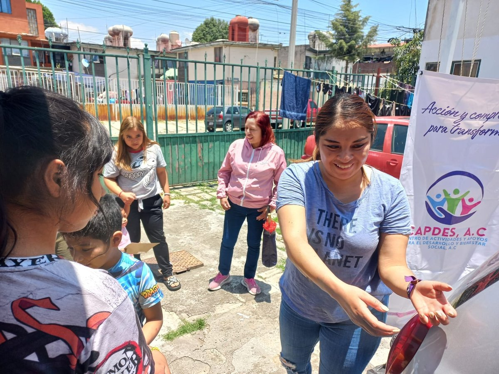

Reflexiones
El derecho a una vida digna empieza por el acceso a oportunidades

Hablar del derecho a una vida digna no es solo referirse a un principio abstracto o moral; es poner sobre la mesa la necesidad de que cada persona, sin importar su origen, género o situación económica, pueda desarrollarse plenamente. La dignidad humana no es un privilegio que se otorga, es un derecho que debe garantizarse. Pero ¿cómo se construye esa vida digna en la práctica? La respuesta es clara: a través del acceso a oportunidades reales y sostenibles.
Tener oportunidades significa contar con las herramientas necesarias para avanzar: educación de calidad, acceso a servicios de salud, empleo digno, vivienda adecuada, participación en las decisiones que nos afectan y, sobre todo, condiciones para soñar y alcanzar metas. Sin oportunidades, incluso el esfuerzo más grande puede no ser suficiente para romper los ciclos de pobreza, exclusión y desigualdad que afectan a millones de personas en nuestro país.
En México, miles de familias enfrentan barreras estructurales que les impiden salir adelante. Las comunidades rurales, las mujeres jefas de hogar, los pueblos originarios y los jóvenes sin acceso a educación o empleo son ejemplos claros de cómo la falta de oportunidades se traduce en vulnerabilidad. La desigualdad no es un fenómeno natural, es una consecuencia directa de un sistema que ha negado a muchas personas el acceso equitativo a los recursos y derechos.
Desde CAPDES A.C. trabajamos para abrir caminos donde antes había muros. Creemos que las oportunidades transforman vidas, y por eso diseñamos proyectos que fortalecen las capacidades de las personas y sus comunidades. A través de capacitación, apoyo productivo, formación en liderazgo, acceso a redes y acompañamiento técnico, promovemos el empoderamiento económico y social de quienes han sido históricamente excluidos.
Una vida digna no es solo sobrevivir: es vivir con bienestar, con libertad, con esperanza. Y eso solo es posible si cada persona tiene la oportunidad de elegir su futuro. Desde la sociedad civil, las instituciones públicas y la ciudadanía, tenemos la responsabilidad compartida de garantizar que el acceso a oportunidades deje de ser una promesa y se convierta en una realidad cotidiana. Porque solo así, con justicia y equidad, construiremos el país que soñamos.